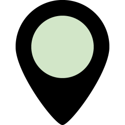

Московские школы и детские сады Московские школы и детские сады
На сайте собрана информация о 598 московских школах и детских садах: результаты сдачи ЕГЭ, достижения на олимпиадах, вузы, в которые чаще всего поступают выпускники, категории учителей, благодарности воспитателям, фотографии классов, опросы и отзывы.
|
Данные проверены и аккуратно оформлены, чтобы вы могли объективно выбрать школу и детский сад для своего ребёнка. Найдите нужный район на карте и нажмите на маркер:  — дошкольное отделение,  — начальная школа, — начальная школа,  — средняя и старшая. Или найдите школу по названию в соответствующем списке. — средняя и старшая. Или найдите школу по названию в соответствующем списке.
|
Если вы обнаружили ошибку или неточность на сайте, пожалуйста, сообщите нам об этом. Также вы всегда можете поделиться с нами своими мыслями и впечатления о сервисе.
|